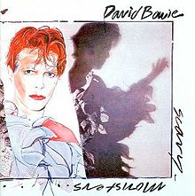
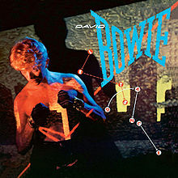
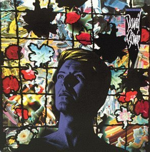
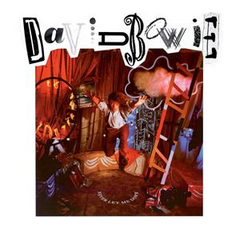

Bowie Remembered (Part Three): The Imperial Years
The eighties were vital in cementing David Bowie into "icon" status, even though his efforts at mainstream success also brought him alarmingly close to losing his relevancy. But it also added another fascinating chapter to his illustrious career.
...
Scary Monsters (and Super Creeps) (1980)
As significant as Bowie’s stay in Berlin proved to be, at some point it had to end. The beginning of the eighties point to Bowie’s triumphant renaissance after a decisively more experimental period, one that finally brought him to seriously flirt with mainstream success.
Now that’s not to say that Scary Monsters (and Super Creeps) isn’t in any way conventional; in fact, the underlying motif behind its wildly-fluctuating sounds makes it one downright maverick statement. It’s remarkable how the askew pop of Ashes to Ashes and Fashion still sound so foreign and incongruous till this day, both willing to enter the new wave landscape while bending its very common boundaries. It’s also save to say that Scary Monsters is a heavily-driven guitar record, though one wouldn’t quite immediately place it under that context considering how its peppered with so many rich sonic textures - the jagged guitar tomfoolery of the title track and It’s No Game (No. 1) are clear precursors to mid-eighties alternative rock, jettisoning Bowie’s usual seductive effrontery with shrill, discordant riffage courtesy of Chuck Hammer and Robert Fripp.
But perhaps Bowie’s most realized work in Monsters is the sublime Teenage Wildlife, an adroitly crafted seven-minute suite that hovers freely with a kind of operatic gusto, the song’s histrionic gestures pulsating with life-affirming zeal alongside his delirious vocal acrobatics. Monsters turned out to be massive chart success for Bowie, acclimating himself with his newfound New York City sophistication before Nile Rodgers helped him become a ubiquitous household name. - Juan Edgardo Rodríguez
Let's Dance (1983)
After trying his hand at practically every other genre in the book, I guess it made sense in 1983 for David Bowie to unleash an album of unashamed pop. Out went trusted comrades Visconti and Alomar, in came Chic’s Nile Rodgers and guitar prodigy Stevie Ray Vaughan. The result? A slick commercial record that still shimmers when the songwriting matches the scale of Bowie’s vision.
Unfortunately, only the frantically joyous Modern Love and the iconic title track and worldwide smash Let’s Dance reached comparable heights to Bowie’s 70s output. While China Girl was a big hit at the time, it sounds incredibly dated and it has to be said, a little creepy today. And Cat People (Putting Out Fire), though a good song, is an inferior re-recording of Bowie’s collaboration with Giorgio Moroder.
Still, minor quibbles aside, you’ve got to respect the bravery of Bowie’s move into the mainstream and the success he achieved after a career spent largely on the fringes. And surely no one worked harder to earn their place in the limelight than he did? - David Coleman
Tonight (1984)
If Let’s Dance firmly planted Bowie as the newfangled face in pop music, then Tonight was another way of abandoning it without making some ill-advised compromises. It’s never a good idea to kickstart a project when your first item in the agenda reads, “retain your new fanbase”, but if looked at it from a different perspective it’s fair to say that his shot at gaining even more commercial viability is understandable.
That said, Bowie gives the impression of looking non-plussed in some of his decision-making: Blue Jean is a dance floor staple that still deserves its place on your local “eighties night” gathering, sure, but the rest consists of an amalgamation of quizzical throwaways: the spit-lacquered production doesn’t do it favors, either, going from stale yacht rock (Neighborhood Threat), reggae-tinged soft rock (Don’t Look Down), and a painfully dull ballad with Tina Turner that wastes her innate vocal talents. Maybe replying on the Borneo Horns players so heavily wasn’t such a great idea, after all.
The vaguely referential Loving the Alien still holds up with its interesting instrumental synth touches, but all in all, Tonight is surely not worth the price gouging his vinyl records are currently experiencing. - Juan Edgardo Rodríguez
Never Let Me Down (1987)
Seen as the nadir in Bowie’s discography, Never Let Me Down was even reviled by the man himself – and who are we to argue? (Although, if we were talking about those Tin Machine albums as well…). By the time that Never Let Me Down was recorded, Bowie’s life had started to resemble The Man Who Fell to Earth’s Thomas Jerome Newton, disconnected and exiled in a strange land (or Switzerland). Its title track is a tribute song to his personal assistant – a lovely gesture, certainly, but it doesn't speak much to common experience.
However, the album is actually quite glossy and pleasant as a listening experience - the bright and catchy "Beat of Your Drum" is only horrifying once you read into its inspiration, while "Glass Spider" actually morphs into enjoyably bombastic electro-pop after the ludicrous spoken-word intro. It even yields one great track in "Time Will Crawl’s" vividly drawn apocalyptic nightmare. While its not quite as miraculous as his coke-induced amnesia and paranoia resulting in Station to Station, that he could turn apathy and boredom into something even remotely listenable (and actually commercially successful), goes someway to show how extraordinary an artist Bowie was. - Mark Davison
...
Come back tomorrow for part four, where we dig a little bit deeper into Bowie's most ominous phase yet...
3 February, 2016 - 04:23 — No Ripcord Staff